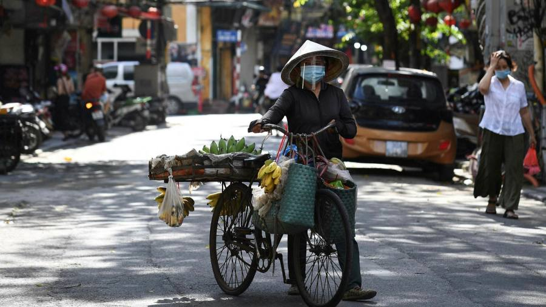
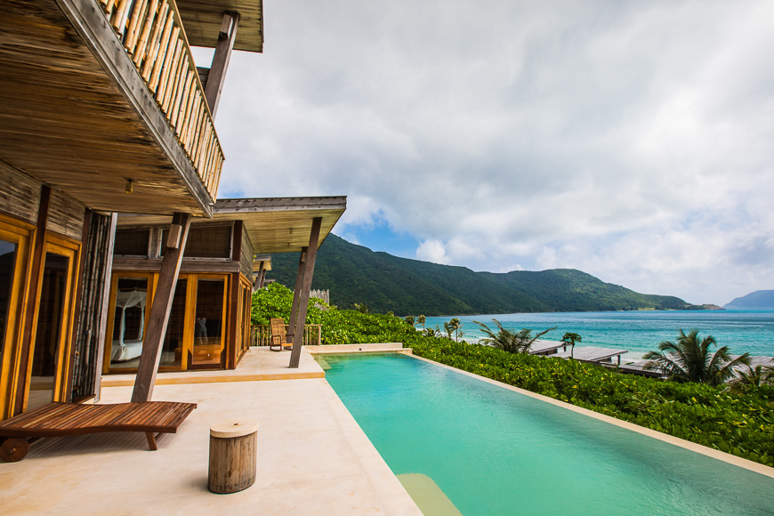
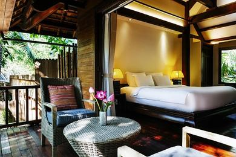

<<<<<<< HEAD
Accomodation
=======
Vietnam
>>>>>>> d2f9801e4ca7bbe9dbeabbf9865e2abb8218f779
VIETNAM
Intro
About Vietnam
Travel experts
Accommodations
Get Started
Steeped in the intrigue of recent history, on a Vietnam vacation today’s travelers enjoy awe-inspiring lush landscapes and a vibrant economy. There are the forested limestone karsts of Ha Long Bay and Lan Ha Bay, cascading rice terraces and golden beaches, as well as the Cu Chi tunnels from the war. In this dichotomy Vietnam proves enduring, an optimistic country ready to share its beauty and culture.

.
Vietnam is an absolute paradise, a country of considerable beauty that has managed to find a way to persevere gracefully through the enduring legacy of the Indochina Wars.
what should you do once you’ve seen where Hô Chi Minh read a proclamation of Vietnamese Independence and investigated historic pagodas? Venture to southern national parks and savor the shimmering paddy fields, village farms, and near-abandoned beaches that offer the perfect escape for a Vietnam honeymoon or a Vietnam vacation. Or explore the world’s largest natural cave, Hang Son Doong Cave.
After decades of ravaging war, Vietnam is resilient with change and progress. Vietnam roads are being upgraded and access to remote parts of the country is constantly improving.
Vietnam weather varies by region, especially between the north and south divide. In the northern region, which includes cities like Hanoi, Vietnam vacations from May to October will be humid with rainfall, whereas winter and spring months will be cool and dry.
There are many fine-dining venues in cities like Hanoi and Ho Chi Minh City, though some of the most authentic Vietnamese dishes will be found at roadside eateries and street markets.


.
Resorts & Hotels in Vietnam
Most cities in Vietnam have a wide range of lodging. You will find idyllic retreats, perfect for a Vietnam honeymoon escape, or you can relax in a thatched villa that exudes private luxury along white sand beaches. We help you arrange the perfect Vietnam vacation package accommodations, including these featured resorts:
.
HANOI
Sofitel Legend Metropole Hanoi
Hanoi's legendary landmark since its establishment at the turn of last century.
SAIGON
The Reverie Saigon
Magnificently furnished, the luxury rooms and suites offer unparalleled comfort with luxuriously-designed furnishings.
HOI AN
Anantara Hoi An Resort
A charming hideaway, on the Thu Bon River in the historic UNESCO World Heritage Site of Hoi An.